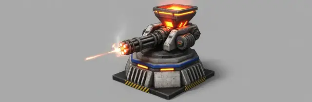
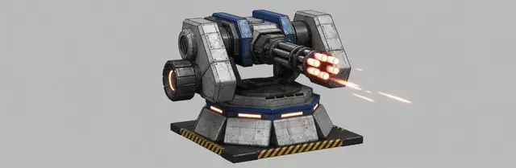
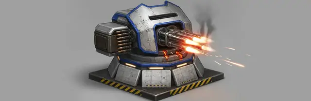
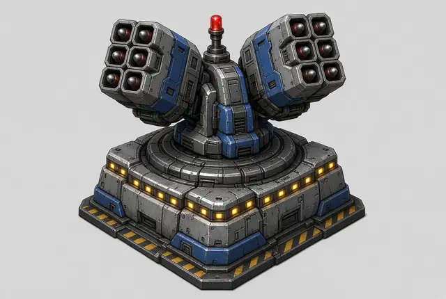

Coming next: guns for the realm, and a canyon to hold
Nothing on this page is in the game yet. It's what the agents started on tonight, and what I've asked for after it. The posts about each piece will come when it lands.
The Citadel fires back
The Citadel gets four point-defence turrets, one on each corner, free with the building. They shoot at bugs on their own, and their upgrades for fire rate, damage and range sit on a new DEFENCE tab. They're paid from the realm wallet, the one the 10% tax fills. So every pilot who unloads helps pay for guns that protect everyone.
Two turrets you build
The AA tower is the Sentinel, the strategy game's anti-air building, brought into the world. It shoots only at things in the air, from 7 cells, which is further than a Gloamwing can spit (4). It's planned to open at about level 10.
The gatling gun is new: it fires red-hot rounds of amalgam, ore fused with Metallic Hydrogen, at the ground and at close air, so a flock diving on it gets shot. It's planned for about level 5. Three concepts were painted; the worker's pick is the forge, with its glowing furnace hopper, and I still have the last word on it.
After them, turret upgrades: marks for fire rate, damage and range on each AA tower and gatling, paid at the turret from your own wallet and shown on the turret.
The gatling concepts, and the Sentinel

Forge: finned base, ribbed barrel jacket, a glowing furnace hopper. The worker's pick.
Cradle: the gun between two arms, a glowing ammo drum.
Bunker: octagonal base, sloped shield, side belt box.
The Sentinel's concept from 4 October: two missile pods on a yoke. It becomes the AA tower.


The canyon
The part I'm most curious about is the canyon. Some zones of the world become canyons, and they play as tower defence. The bugs come in waves along set paths through the canyon toward a field of rich ore and MH, to mine it for themselves. Pilots build AA towers and gatling guns along the rims.
- The first wave replays until the pilots beat it, with turrets or with their own torches.
- Beating it starts the zone's game: waves that grow harder, each one paying every pilot who fought in it.
- If a wave carries off too much of the prize, the queen comes. The Matriarch fells every turret in the zone, and it starts over from wave one.
- Clear the last wave and the canyon is held for a world day: the prize field is the pilots' to mine, with no waves.
The first canyon will be cut into a region one step out from the start. The Matriarch herself is on the list too: her nest in Slag Pockets, her slam, her acid and her roar, and a reward for the pilots who bring her down.
Also on the list
- Regions whose borders follow the land, with passages you can see and drive through without a cut.
- No more solo flights: you build landing pads and ride a Dropship between them.
- The map as a satellite view of the real ground, with tooltips on every site, building and deposit.
- The world keeps running after you quit, as long as the Mac is on, and mercenary prospectors keep mining while you're away (both have landed since).
How M8 ends
The milestone is done when, in a recorded run, a pilot at Prospect Landing pays the Citadel's tax, buys a blueprint and a supply, builds a gatling gun that kills bugs drawn to a deposit, walks through a passage into the next region, and rides the Dropship from one built pad to another, with every test suite passing.